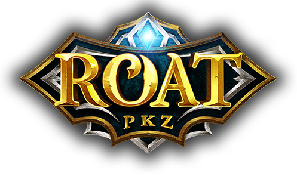

ROAT PKZ PLAYER GUIDE
Roat PKZ PKP, Gear and Progression Guide
Use this guide to understand PK Points, separate the server’s currencies and build a flexible bank for PvP, PvM and account progression. The aim is to make each upgrade support the way you actually play.
Last reviewed:
CURRENCY BASICS
What Is PKP?
PKP means PK Points, the main currency used for player trading and many purchases on Roat PKZ. When this website discusses a standard Roat PKZ gold order, the requested amount is quoted in PKP. 1M PKP means one million PK Points.
Donation Credits, Donator points and other server currencies are separate from PKP. They can have different uses and values, so writing only “gold” can create an avoidable misunderstanding. State the currency and total amount whenever you compare a trade or request a quote.
SPENDING PRIORITIES
What Players Use PKP For
PKP can support several kinds of progression. PvP-focused players may budget for weapons, armour, combat supplies, replacement sets and optional higher-risk setups. Others direct more of their bank toward PvM gear, utility items or player-traded upgrades that support broader account goals.
The useful question is not simply which item is strongest. Ask what problem the purchase solves, what supporting equipment it needs and whether you can still afford to play your chosen content after buying it.
REBUILD BEFORE YOU RISK
Planning a PvP Bank
Begin with one main setup you understand. Add the food, potions and other supplies it consumes, then decide how many complete replacement sets you want ready. That replacement allowance should be separate from PKP reserved for long-term upgrades.
- Main setup: gear you can use confidently and replace without disrupting the whole bank.
- Supply reserve: enough consumables for repeated fights rather than a single trip.
- Replacement sets: a deliberate rebuild budget based on your usual risk.
- Risk limit: a maximum loss decided before entering a higher-risk fight.
- Alternative loadout: a lower-cost option for practice or rebuilding.
A single expensive item should not consume the entire bank if it leaves you unable to assemble a complete setup. Better equipment can provide more options, but it cannot guarantee a PvP win.
BALANCED ACCOUNT GOALS
PvM and Account Progression
For raids or bosses, build around the content’s requirements: a suitable main weapon, armour, utility items and enough supplies to learn and repeat the encounter. The best next weapon upgrade depends on the activity, not only on prestige or rarity.
Some player-traded upgrades may support account progression, but availability and server mechanics can change. Compare any PvM purchase with your PvP plans before committing the bank. Keeping both budgets visible makes it easier to avoid funding one activity by accidentally removing everything needed for the other.
NEED MORE PKP?
Check the Current Roat PKZ Rate
Roat PKZ rates start from $3.50 per 1M PKP. Send the amount you need to confirm the current price and stock.
HIGH-VARIANCE ACTIVITIES
PKP and Gambling Activities
Roat PKZ includes gambling activities such as Dice, Blackjack, Mines, Flower Poker and staked boxing. These can move a player’s balance quickly in either direction, so they should remain separate from the PKP needed for core gear, supplies or replacements.
PLAYER-SUPPLIED PKP
How Players Get and Sell PKP
Players may build PKP through PvP, PvM, merching, events or occasional gambling wins. Each route has different risk, time and consistency, and none should be assumed to produce a fixed return.
Some players eventually have surplus PKP that no longer fits their immediate goals and decide to offer part of it for sale. Because supply comes from player decisions, available amounts can change. Anyone considering a sale should confirm current rules and the complete terms before transferring currency.
GOAL-BASED ESTIMATE
How Much PKP Might You Need?
Supplies and replacement sets
Count a normal set, the number of rebuilds you want and the consumables needed to use them.
One major gear upgrade
Budget for the upgrade plus any supporting item required to make the setup functional.
Multiple PvP setups
Separate your routine, practice and higher-risk loadouts instead of treating them as one vague total.
Larger account goal
Keep a long-term reserve apart from the PKP required for current PvP and PvM activity.
Once the list is complete, total it in PKP and send that amount when requesting a quote. A precise PKP request is easier to evaluate than a general request for enough “gold” to upgrade an account.
Sources and Further Reading
Currency facts were checked against the official Roat PKZ Wiki pages for Currencies and PK Points. Use the current official server information for mechanics and rules that may have changed since this review.
NEXT STEP
Request the Amount Your Plan Actually Needs
The Roat PKZ gold page explains how to submit a PKP amount and check the current variable rate and available stock.
View Roat PKZ Gold Rates